Everything Eberhard Wolff said, restructured so a junior developer can read it in 20 minutes and remember it a year from now — with diagrams from the slides, code-shaped examples, and research-backed enrichment.
By Eberhard WolffJCON Europe47 min original recording
Eberhard Wolff's "Domain-Driven Design: A Complete Example" walks through a single imaginary e-commerce project and applies one DDD tool after another. The whole talk is 47 minutes; this page is the same content, re-shaped for reading and remembering. If you only have five minutes, read the nine bullets below.
DDD is a toolbox, not a waterfall. Eberhard moves from abstract (Event Storming) to concrete (Java patterns) but stresses: iterate, change abstraction level, do not treat this as phases. (Ch 1)
Event Storming — domain experts + engineers stick past-tense events on a wall, order them in time, find parallel "swim lanes," and mark "pivotal events" where the world is genuinely different afterwards (e.g. Order accepted). Low-tech, parallel-friendly, reveals hidden social structures. (Ch 2)
Bounded Context + Ubiquitous Language — a boundary inside which one model and one vocabulary are consistent. The same word means different things across contexts (Eberhard's Customer: invoice vs delivery). Candidates come from swim-lane/pivotal-event patterns, but it's judgment, not a rule. (Ch 3)
Core Domain — the part of the system you should invest your best engineers in. You cannot identify it without domain experts; "I don't know" is a legitimate answer. In Eberhard's example, delivery is the core, the rest is generic/supporting. (Ch 4)
Team Topologies — Eberhard prefers it over Evans' Strategic Design because it's simpler and adds fracture planes beyond just domain (location, regulatory, change cadence). Four team types: Stream-aligned, Platform, Enabling, Complicated-Subsystem. Three interaction modes: Collaboration, X-as-a-Service, Facilitating. Magnets, not mandates: the org chart alone won't change behavior. (Ch 5)
Tactical building blocks form a hierarchy — Services → Factories → Repositories → Aggregates → Entities + Value Objects + Domain Events. Lower levels don't know about higher ones. (Ch 6)
Don't reach for tactical DDD when simpler patterns fit. For pure CRUD or thin reporting, Martin Fowler's Transaction Script or Table Module is correct. Eberhard: ask the domain expert why before building a rich model. (Ch 7)
In code: keep the domain as plain POJOs (no JPA leakage); use jMolecules to express DDD roles as architectural stereotypes; use architecture-management tools (Structure 101, ArchUnit, jQAssistant) to reveal dependency violations and provoke conversation, not to police. (Ch 8)
The whole talk is iterative, not a recipe. Eberhard's most-repeated line: "It might look like a waterfall. It's not. Repeat any step whenever you need to." (Ch 1, Ch 9)
Eberhard Wolff (Head of Architecture at swag, an e-commerce consultancy) introduces the talk.
The "Why": DDD has many tools — Bounded Context, Aggregates, Event Storming, etc. — and people keep asking how they fit together.
It might look like a waterfall (abstract → concrete). It is not. Iterate, change level of abstraction, redo any step.
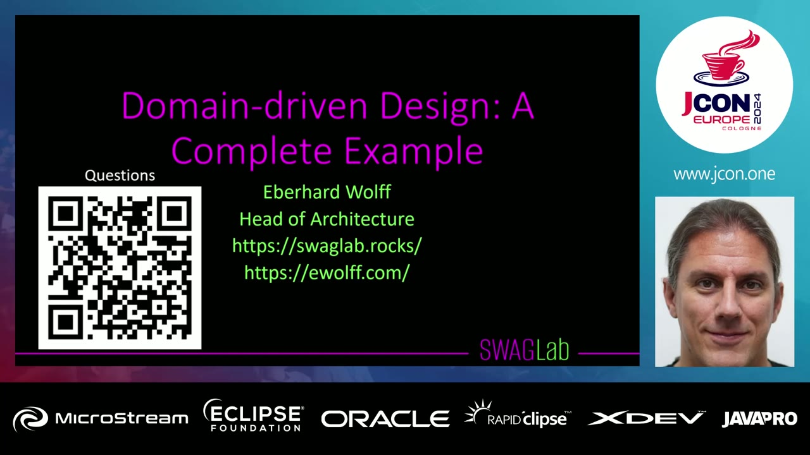
Frame 1 (00:30) — Opening slide. Eberhard's title card with QR code for live questions, JCON Europe 2024 branding. Speaker visible in lower-right headshot.
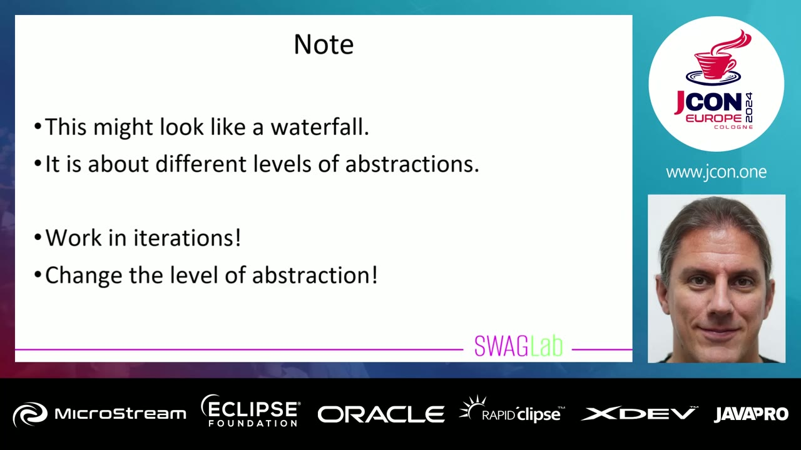
Frame 2 (02:00) — The "Note" slide. Eberhard's pre-emptive disclaimer. He spends the next 45 minutes going from abstract to concrete — and he wants you to remember that every step is repeatable.
Why this talk?
Eberhard opens with a meta-question: DDD has a lot of tools — Event Storming, Bounded Contexts, Ubiquitous Language, Aggregates, Repositories, Domain Events, Value Objects, Strategic Design, Core Domain… If you've only read the Wikipedia page, it looks like a checklist. It is not. The tools compose, and the order matters less than the iteration.
"The whole thing might look like a waterfall because we are going from more abstract to more concrete techniques, but it's certainly not supposed to be a waterfall. You need to work in iterations."
— Eberhard Wolff, 00:01:29
The domain Eberhard will use
An imaginary e-commerce project. Not because he's an e-commerce expert, but because "we have all been there and ordered something at some e-commerce site." It takes one slide to explain, which means domain experts can follow it.
What you'll leave with
By the end of the talk, Eberhard has applied 9 DDD techniques to the same e-commerce project, in order:
Event Storming
Bounded Contexts + Ubiquitous Language
Identifying BC candidates
Core Domain
Team Topologies (instead of Evans' Strategic Design)
Tactical building blocks (Entities, VOs, Aggregates, Repositories, Factories, Services)
Alternatives for less complex systems
POJOs + jMolecules
Architecture management tools
Each one is a technique you can use independently. None of them are mandatory. Use what fits.
The "NOT a waterfall" mnemonic
W-I-C-C — Work in Iterations, Change level of abstraction, repeat any Concrete step.
Whenever you feel yourself thinking "we did Event Storming, so now we do Bounded Contexts" — stop. Go back. Repeat. The order is convenient for teaching, not for shipping.
What: a workshop where domain experts + engineers put past-tense events on a wall as orange stickies, then enforce a timeline, identify parallel swim lanes, and mark pivotal events where the world changes.
Why: domain experts don't know formal methods; engineers don't know the domain. Event Storming is the low-tech shared workspace where both can meet.
Bonus: it reveals social structure — who controls whom, who knows what — not just business structure.
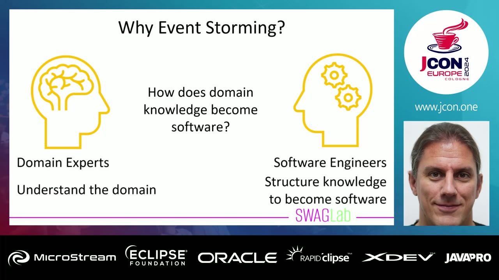
Frame 3 (03:30) — Why Event Storming? The collaboration problem in one image: domain experts have the knowledge but no formalism; engineers have the formalism but no domain. Event Storming is the bridge.
The problem Event Storming solves
Domain experts understand the domain. Software engineers know how to structure knowledge so it becomes software. If you only listen to the experts, you don't get structure. If you only listen to the engineers, you don't get the domain. And the domain experts "don't know any formal methods" — UML, ER diagrams, sequence diagrams — they "can't really follow and probably shouldn't."
So you need a method that both groups can use without one having to learn the other's toolkit.
The mechanics (Eberhard's version)
1. Write events in the past
An event is "something that has happened". It needs at least a noun and a verb, and the verb is in past tense — because it's a fact, not an intention.
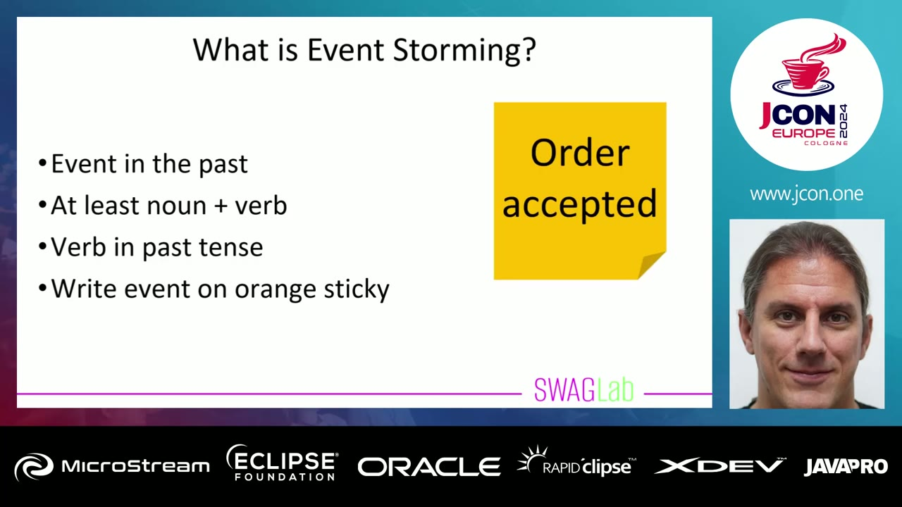
Frame 4 (04:30) — What is Event Storming? A big orange sticky with a folded corner shows Eberhard's reference event: "Order accepted."
Examples: Order accepted, Payment received, Parcel left warehouse, Invoice sent.
2. Chaotic exploration
First phase: everyone writes stickies and sticks them anywhere on the wall. No order. Bias toward volume, not order. The chaos is the point — it surfaces disagreement early.
3. Enforce the timeline
Re-order the stickies left-to-right. Remove duplicates. Argue about what really needs to come next.
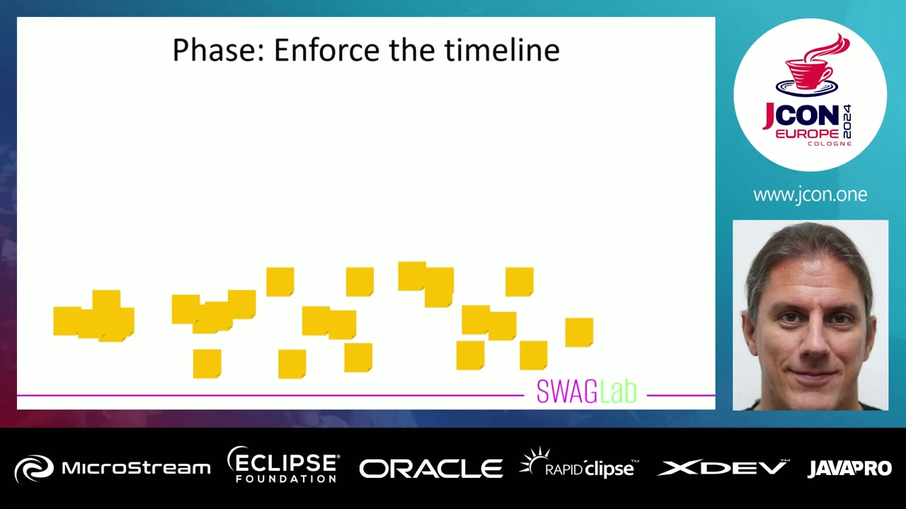
Frame 5 (05:30) — Enforcing the timeline. Twenty-plus golden stickies scattered in loose horizontal clusters. Before-order.
4. Identify swim lanes
Once the events are in order, parallel sequences become visible. Draw a line. Name the lane. In Eberhard's e-commerce example: Invoicing and Delivery run in parallel after the order is accepted.
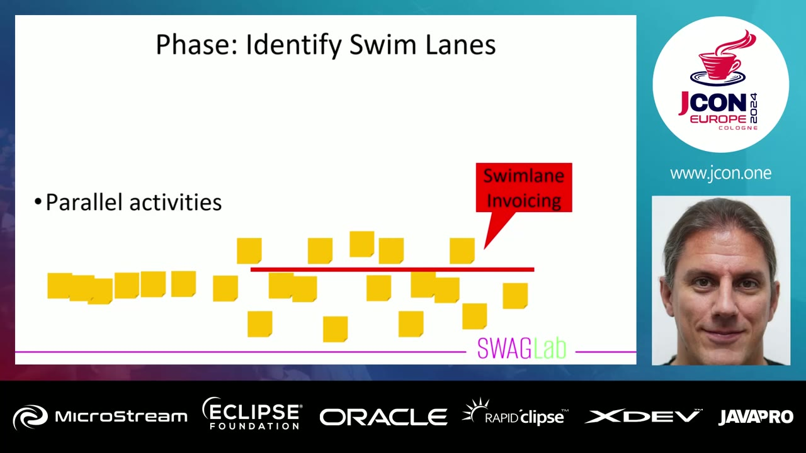
Frame 6 (06:00) — Swim lanes appear. Same events, now grouped; a red line separates the invoicing sequence from the rest.
5. Pivotal events
Eberhard's heuristic: "Somehow the world is different afterwards." The event isn't about compensating actions or reversibility — it's about phase transitions.
Order accepted: before you can fiddle with a shopping cart. After the cart is dead and a real Order exists.
Parcel left warehouse: before the warehouse can hold it back. After DHL will deliver it.
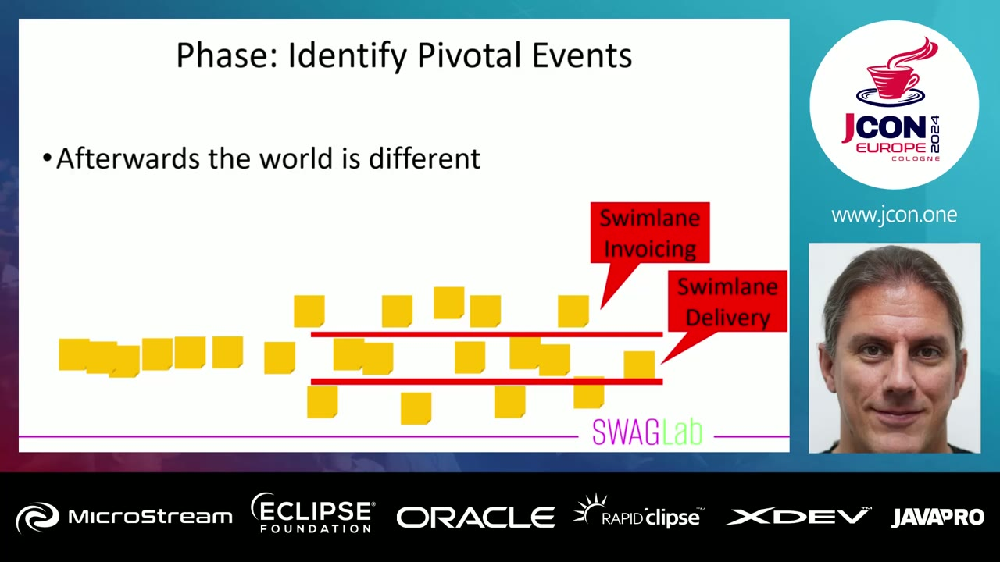
Frame 7 (06:50) — Two swim lanes in place. Now we can start looking for the events that separate them.
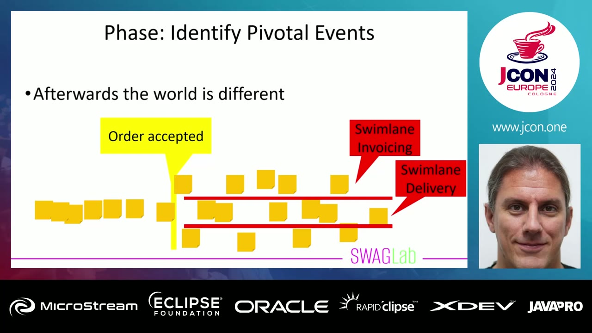
Frame 8 (07:30) — Order accepted marked as the pivotal event. Before/after the marker, the model changes: cart → order, edit → cancel-only, no invoice → invoice pending.
Why Event Storming works (Eberhard's three reasons)
Low-tech, easy for domain experts. It's stickies and a wall. No UML. No notation to learn.
Parallel by nature. 10+ people can stick events simultaneously. The wall absorbs everyone.
Social structures become visible. The person who hovers near the invoicing events knows invoicing. The person trying to control everyone's stickies is trying to control the team. Eberhard: "if there is someone who wants to control everyone, well, it's going to be obvious."
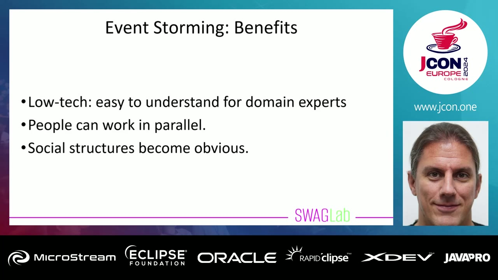
Frame 10 (09:30) — The three benefits, on one slide.
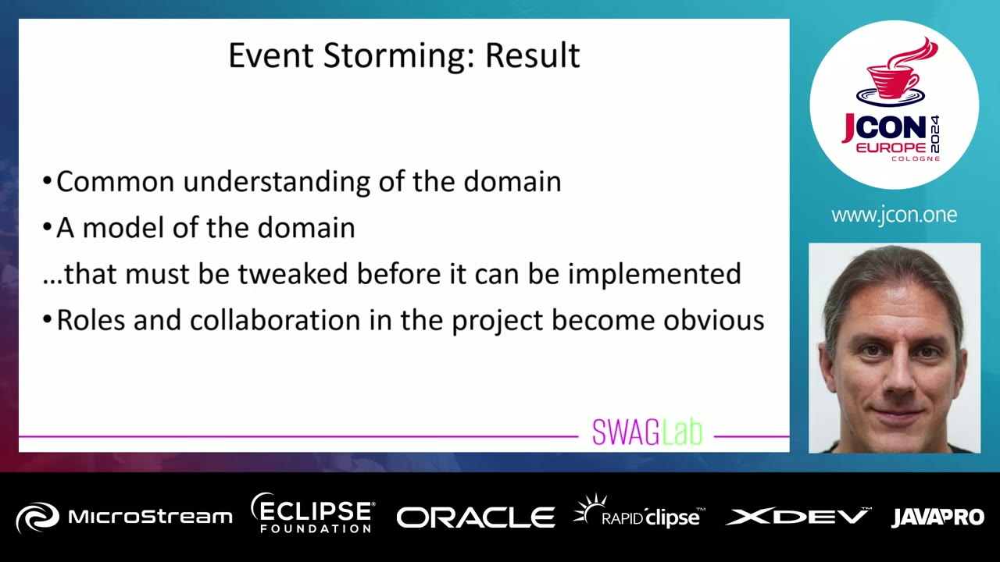
Frame 11 (12:00) — The result. A common understanding, not a finished spec. You'll still need to "tweak before implemented."
"If you have users that actually use the system, they might not have the vision and the context to understand why this system was created in the first place. If you just stick to managers, they will not understand how the day-to-day work works. You need both."
— Eberhard Wolff, 00:09:30
The people in the room (often forgotten)
Eberhard stresses: Event Storming is not just about the artifact on the wall — it's about collaboration. You need:
Users who actually use the system (for day-to-day reality).
Managers (for vision and value).
People with vision and day-to-day knowledge (rare, but essential).
Enrichment — the full Event Storming lifecycle (Alberto Brandolini)
Eberhard mentions three phases. The canonical sequence (Brandolini's book Introducing EventStorming) has seven, plus Big Picture feeds into Process-Level and Design-Level workshops. If you only take one thing from the enrichment: Phase 2 must be silent.
Kick-off — frame the goal, scope, agenda.
Chaotic Exploration — silent writing of past-tense events.
Enforcing the Timeline — order, dedupe, surface disagreements.
People and Systems — yellow stickies for actors/roles, blue for external systems.
Pivotal Events — mark the few events that represent phase transitions.
Problems and Opportunities — neon-pink "hotspot" stickies at conflicts and unknowns.
Pick Your Problem — vote, assign an owner, leave the room with a commitment.
After Big Picture: Process-Level ES (adds commands and policies) and finally Design-Level ES (adds aggregates, used as a 1:1 input to code).
Anti-patterns — Brandolini's "Common Pitfalls"
The Big Table at the Center of the Room. Blocks the wall. Remove it.
The Dungeon Master. Facilitator writes stickies for participants. Stay out of the way.
The Committee Trap. Phase 2 must be silent; otherwise it becomes a debate.
Divide and Conquer Too Early. Converge first, split for Process-Level.
Precise Notation Too Early. Commands, policies, aggregates belong in Design-Level, not Big Picture.
Adding Special Stickies. Custom colors get ignored. Stick to the official palette: orange=event, yellow=actor, blue=external system, lilac=software, pink=hotspot, green=opportunity.
Remote participants via robot/AV. Brandolini and Bourgau both tried it; it doesn't work yet. ES is a co-located activity.
Junior-friendly analogy
Event Storming is like storyboarding a movie before filming. The whole cast stands around a long strip of paper and drops cards for every key moment — Hero enters, Villain appears, Explosion — then argues about the order. Out of that argument, the plot, and the boundaries between subplots, become visible.
The six official sticky colors
Orange = event · Pink = hotspot · Yellow = actor · Pale Blue = external system · Lilac = software system · Green = opportunity.
Brandolini insists: stick to this palette. Adding your own color silently signals that you've made up your own dialect — and the next room won't read your wall.
Bounded Context = a boundary inside which one model + one Ubiquitous Language are consistent. Belongs to one team (a team may own several BCs, but never the other way around).
The killer example: Eberhard's Customer. For Invoicing, the customer is whoever pays (his company). For Delivery, the customer is whoever receives (himself, at his home). Same word, two meanings — exactly because they're two BCs.
BC candidates come from the Event Storming wall: areas between swim lanes and pivotal events are good starting points. Not all pivotal events separate BCs.
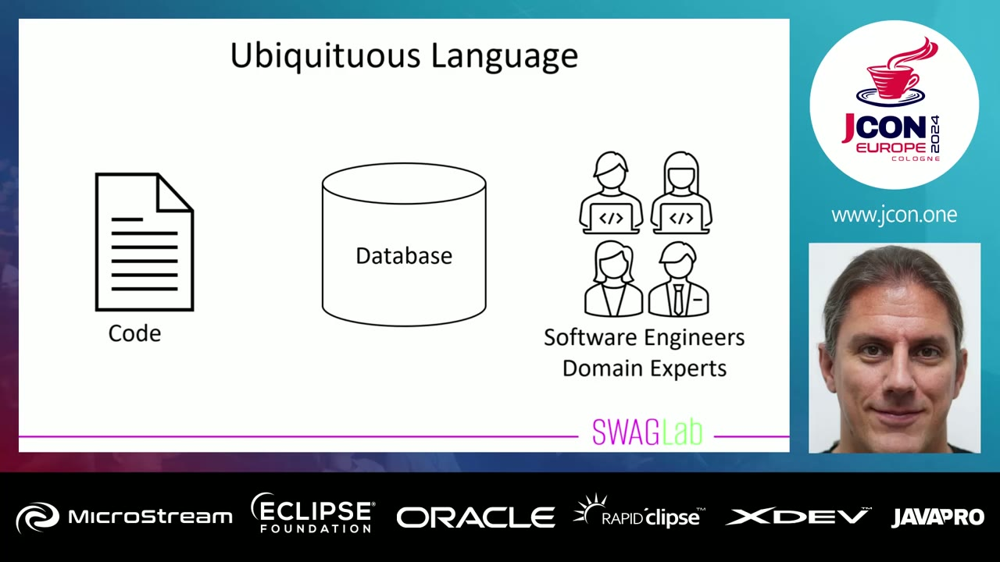
Frame 13 (14:30) — The Ubiquitous Language diagram. One vocabulary that lives in the code, the database, and how every human in the room talks.
What lives inside a Bounded Context?
Two things, tightly coupled:
A model (the code that represents the domain).
A Ubiquitous Language — a vocabulary that is "everywhere": in the code, in the database schema, in the team's mouth, and in the domain expert's mouth.
Some terms are obvious (Customer, Order). Some are project-specific jargon that nobody outside the team will know. Eberhard's project has a thing called "Zupas" that "truly only they know" — and that's fine. The point is: that team's code, database, and conversations all agree on what a Zupa is.
The Customer example — Eberhard's centerpiece
Eberhard is buying a laptop. swag (his company) is paying. So:
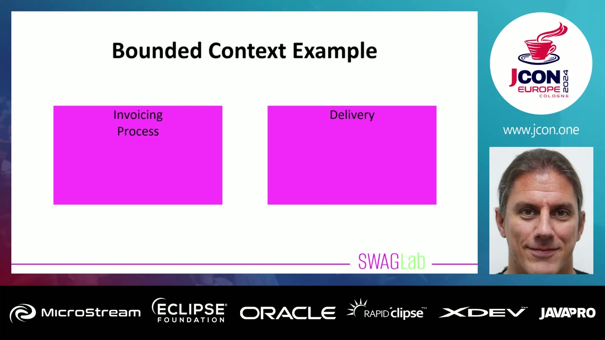
Frame 14 (15:30) — Two BCs, side by side. The differing meanings haven't been revealed yet.
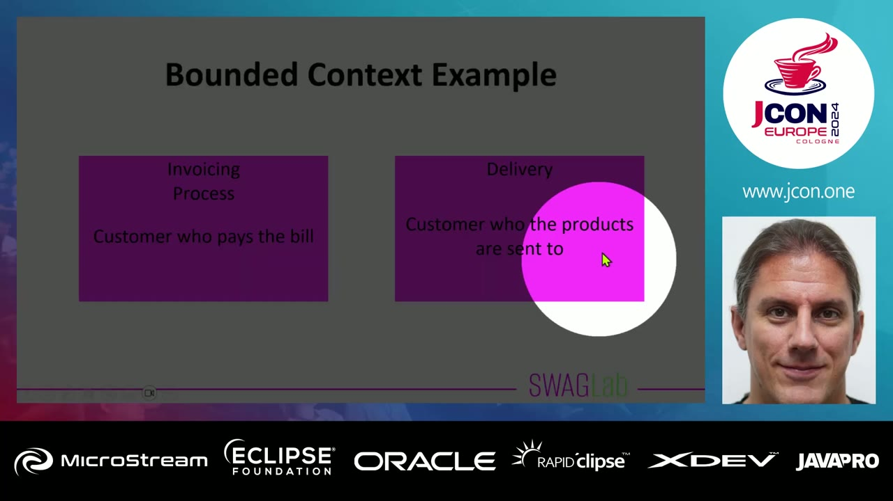
Frame 15 (16:30) — Same word, two meanings, side by side. The spotlight makes the Delivery definition pop. Same English noun, two different domain objects.
"Those are actually two different things that have the same name. And now we can easily reason about this, because we don't have to say 'the customer' — we can say 'the customer in the context of delivery' or 'the customer in the context of invoice processing.'"
— Eberhard Wolff, 00:16:13
Without the BC split, you'd need to say "the customer who pays" or "the customer who receives" every time, or invent two ugly class names (PayingCustomer and ReceivingCustomer). With the BC split, each context's Customer is internally consistent and you can call it Customer everywhere inside that context.
How to find BC candidates
Eberhard's heuristic (which matches Brandolini's Finding Bounded Contexts with EventStorming):
Look at the Event Storming wall. Areas between swim lanes and pivotal events are good candidates.
Not all pivotal events separate BCs. Eberhard thinks Parcel left warehouse does not start a new BC — you still care about the same domain (products, delivery) before and after; you've just lost the ability to undo. But Order accepted does, because the model changes shape (cart → order, edit → cancel-only).
Discuss and disagree. Eberhard: "You might have a different opinion and that's great." Boundaries are a judgment call. Two teams looking at the same wall will draw different boundaries.
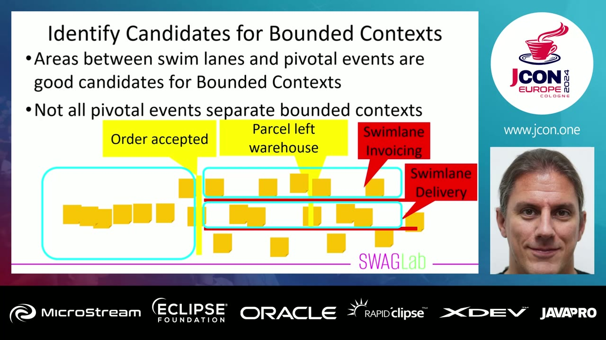
Frame 16 (17:30) — BC candidates highlighted on the wall. Cyan boxes enclose the three candidate BCs; yellow markers show pivotal events; the third pivotal (Parcel left warehouse) is intentionally not splitting a new BC.
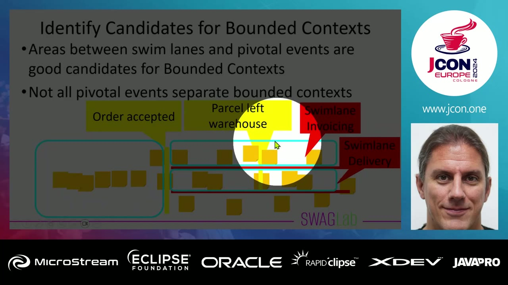
Frame 18 (21:00) — Eberhard's spotlight on the decision. "Does Parcel left warehouse deserve its own BC?" His answer: probably not.
Why Bounded Contexts are worth the trouble
Changes localize. Want to change how delivery works? Touch the delivery BC. Nothing else.
Dependencies are unidirectional. Order processing uses delivery and invoicing; the reverse is not true. Clean dependency graph.
Responsibilities are locally owned. Requests are "properly local to one bounded context" — a phrase Eberhard uses to remind you: if a request spans BCs, that's a smell.
Enrichment — "same word, different meaning" beyond Eberhard's Customer
Term
Context A
Context B
Why they differ
Product
Sales / Catalog
Procurement / Warehouse
Sales wants image, price, marketing copy; Procurement wants supplier, lead time, margin; Warehouse wants SKU, bin location, weight.
Shipping needs access notes, GPS, delivery windows. Billing needs invoicing postal address. Tax authority needs the registered legal entity — often different from both.
Order
Sales
Fulfillment
Sales calls it "order" the moment payment clears; fulfillment only treats it as actionable when inventory is reserved and a carrier label exists.
Active
Sales ("has open orders")
Support ("has open tickets")
One boolean, two completely different definitions.
Enrichment — the Context Map patterns (Evans 2003, Vernon 2013)
When two BCs need to talk, Evans named the ways it can happen. The right pattern depends on power dynamics:
Pattern
When to use it
Trade-off
Shared Kernel
Two teams share a small subset (e.g. a Money type, a shared identity) and coordinate changes.
Maximizes reuse only if the kernel stays tiny. Grows toxic fast.
Customer / Supplier
Upstream accepts downstream's needs as input to planning; downstream can negotiate priorities.
Healthy while the supplier listens. Collapses into Conformist the moment they stop.
Conformist
Downstream has no leverage over upstream (external SaaS, government API, legacy with no owner). Adopt upstream as-is.
Cheap and fast. Corrupts your ubiquitous language over time as upstream terminology leaks in.
Anti-Corruption Layer (ACL)
Downstream builds a translation layer that converts upstream model into its own domain terms.
Protects model integrity. Costs effort to build, pays back every time upstream changes.
Open Host Service (OHS)
Upstream exposes a single, stable, well-documented public protocol.
Decouples upstream's internal model from the public contract. Requires upstream discipline.
Published Language (PL)
The interchange format itself is a shared schema (JSON Schema, Avro, Protobuf, AsyncAPI). Almost always paired with OHS.
Standardizes integration at the data layer. Becomes a governance burden once many contexts depend on it.
Anti-patterns — Bounded Contexts gone wrong
Big Ball of Mud pretending to be a BC. A "context" with 300 entities and no clear ownership is a legacy monolith with a sticker on it.
Distributed Monolith. 15 microservices that can't deploy independently because they share a database or call each other synchronously in a chain.
Wrong granularity — too fine. "Grains of sand" anti-pattern: nano-services whose boundaries are CRUD verbs, not business capabilities.
Wrong granularity — too coarse. "Fat service" / mini-monolith: one BC handles payment + inventory + shipping.
The Shared Database. When two contexts share the same schema, the boundary effectively disappears (Vlad Khononov). The single most common DDD anti-pattern.
Junior-friendly analogy
Two hospitals sharing the word "Patient." In Billing, a Patient = name + insurance ID + invoice history. In the ER, a Patient = triage level + allergies + blood type. Forcing both departments to share one Patient class produces a bloated god-object with hundreds of mostly-null fields. The fix: each department owns its own Patient model inside its own BC, and they exchange only the IDs they need.
"BCs are linguistic boundaries"
When the same noun genuinely means different things to different stakeholders, you have found the boundary. Don't fight it — formalize it.
If you ever find yourself naming classes PayingCustomer, ReceivingCustomer, CatalogProduct, WarehouseProduct — you don't need new classes. You need two Bounded Contexts.
Core Domain = the part of the system you exist to build. The reason a customer picks you.
You cannot identify it without domain experts. "I don't know" is a legitimate answer.
In Eberhard's e-commerce project: delivery is the core (fast, reliable). Order and invoicing are generic or supporting subdomains.
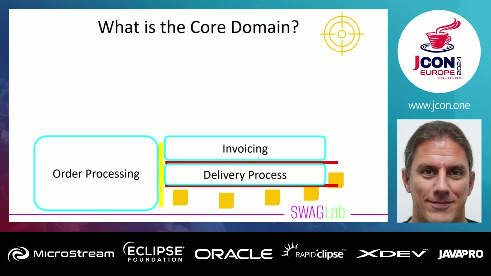
Frame 19 (22:30) — Three candidate BCs, target icon in the corner. Eberhard asks the audience: which one is the core?
The trick question
Eberhard asks the audience, "Which is the core domain — Order Processing, Invoicing, or Delivery Process?" Hands go up for each. Then he reveals:
"I would argue that this is a question that we cannot answer unless we talk to the domain experts. In our case it's about delivering quickly and reliably — so the core is the delivery process. The rest are just generic subdomains or supporting subdomains."
— Eberhard Wolff, 00:22:57
The answer is contextual. For a different e-commerce business — say, one that competes on recommendation quality — the core would be the catalog/recommendations engine, not delivery.
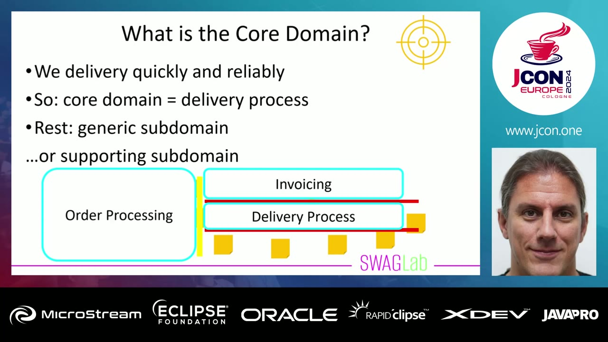
Frame 20 (23:30) — The reveal. "Core = delivery process. Rest: generic or supporting."
What changes once you know the Core?
You direct your best engineers at the core domain. Everything else gets less attention, off-the-shelf solutions, junior staff, or outsourced. Evans: "The heroes are working in the core domain."
Junior-friendly analogy — a restaurant
The chef's recipe and technique is your Core Domain — that's what diners come for. The reservation system is Supporting — necessary, custom to your restaurant, but not what makes the food special. The light bulbs and dishwasher are Generic — buy them off the shelf.
Enrichment — the three subdomain types (Evans 2004, Vernon 2013)
Type
Job
Investment
Core Domain
Source of competitive advantage. If it disappeared, your reason-to-exist goes with it.
Best developers, deepest modeling, custom code, ubiquitous language, constant refactoring.
Supporting Subdomain
Necessary for Core to function, but not differentiating. Often business-specific enough that no off-the-shelf product exists.
Custom-built, but with a smaller team, less polish, less investment.
Generic Subdomain
Functionality that is solved identically in most companies (auth, email, PDF generation, mapping).
Buy it, use a library, hand it to juniors. Vernon: "Solution may be available for purchase or be outsourced… NO WAY TO DIFFERENTIATE."
Enrichment — how to identify which is which
Ask domain experts, not developers. Only the operations VP can tell you whether shipping logistics is your differentiator.
"I don't know" is legitimate. Eberhard's point exactly.
Apply the replacement test. Imagine your competitor replaces your implementation of this subdomain with a SaaS product overnight. Do you lose customers? Yes → Core.No → Supporting or Generic.
Where do the senior people spend time? If the CTO never talks about it, it isn't Core.
Examples — domains where the "obvious" answer is wrong
Business
"Obvious" Core
Actual Core (depends on strategy)
Why
E-commerce platform
Product catalog
Could be shipping logistics
If you compete on same-day delivery, route optimization is the moat; product data is solved.
Banking app
Account management
Could be fraud detection
Most banks have the same accounts; winners invest in fraud models.
B2B SaaS
Reporting & dashboards
Could be onboarding UX
If customers churn in week 1, a frictionless first-run beats a better pivot table.
Cargo shipping (Evans' running example)
Booking
Routing & handling-event tracking
Anyone can take a booking; nobody can replicate your domain knowledge of how cargo moves.
Anti-patterns — Core Domain gone wrong
"Everything is Core." When every team labels its area as Core, nothing gets heroic investment and the term loses all meaning.
"Core" as a status symbol. Using Core to win political battles or justify headcount, rather than to focus investment.
No investment difference between subdomains. Senior engineers polishing logging while auth is neglected.
Eberhard prefers Team Topologies over Evans' Strategic Design because it's simpler, more intuitive, and covers more fracture planes than just Bounded Context.
Four team types: Stream-aligned, Platform, Enabling, Complicated-Subsystem.
Three interaction modes: Collaboration, X-as-a-Service, Facilitating.
Team Topologies defines magnets, not mandates. The org chart alone won't change behavior.
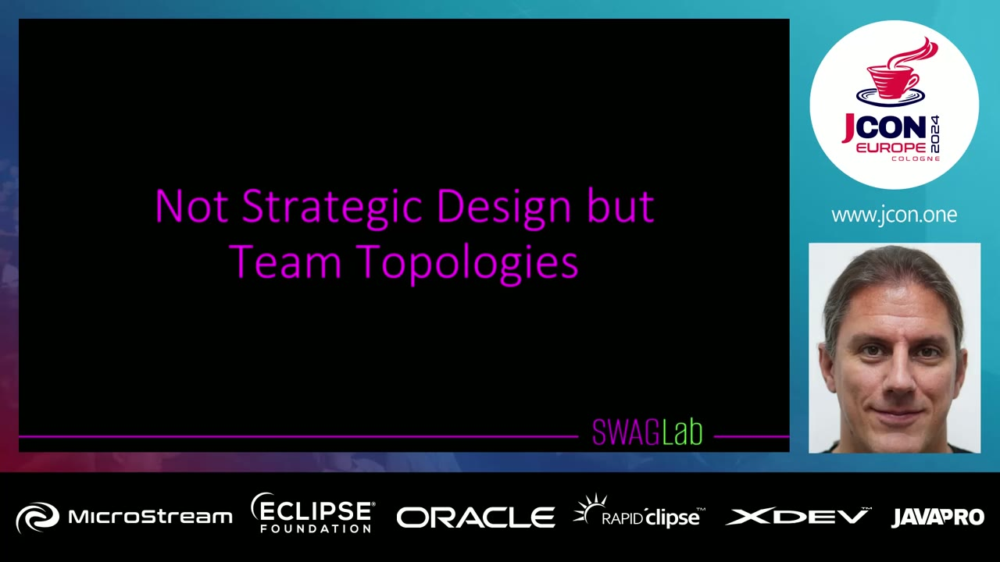
Frame 21 (24:30) — The pivot. Eberhard skips Evans' Strategic Design and goes straight to Team Topologies. He has given a separate talk explaining why.
Why Team Topologies, not Strategic Design?
Simpler. Four team types + three interaction modes. That's the entire vocabulary.
More intuitive. Most engineers "get it" in five minutes.
More fracture planes. You don't have to split teams only by domain. Location, regulatory boundary, change cadence, technology, risk profile — all valid fracture planes.
More reflective of the wild. Acknowledges that org charts aren't enough and informal collaboration (Slack, DMs, shared docs) shapes the real organization.
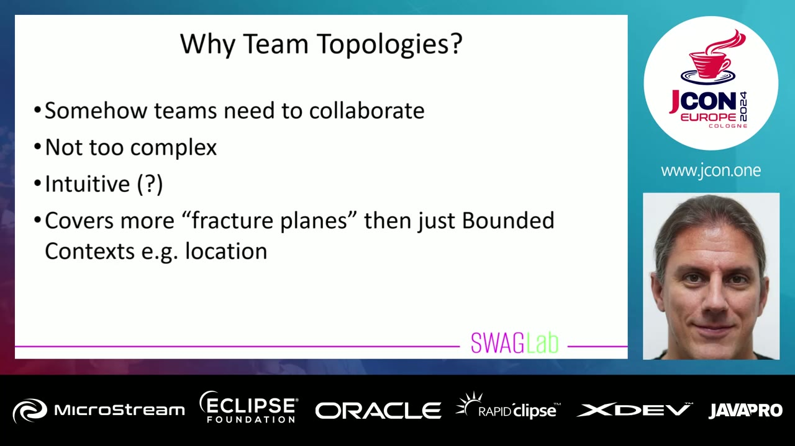
Frame 22 (26:00) — Eberhard's four-bullet case. "Covers more fracture planes than just Bounded Contexts e.g. location."
What is a fracture plane?
A fracture plane is a reason teams should be separate. Eberhard's example: "I don't know, in Hamburg for example there are two locations, and it probably makes sense to have one team per location because they can go in one room and talk." If you ignore that and say "we'll just have people work together for other reasons," every team will be distributed across locations and you'll get the worst of both worlds.
The four team types
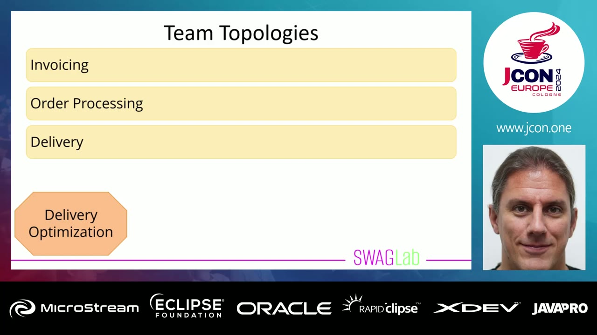
Frame 23 (27:30) — Stream-aligned teams (the three yellow bars) + one Complicated-Subsystem team (Delivery Optimization, orange octagon).
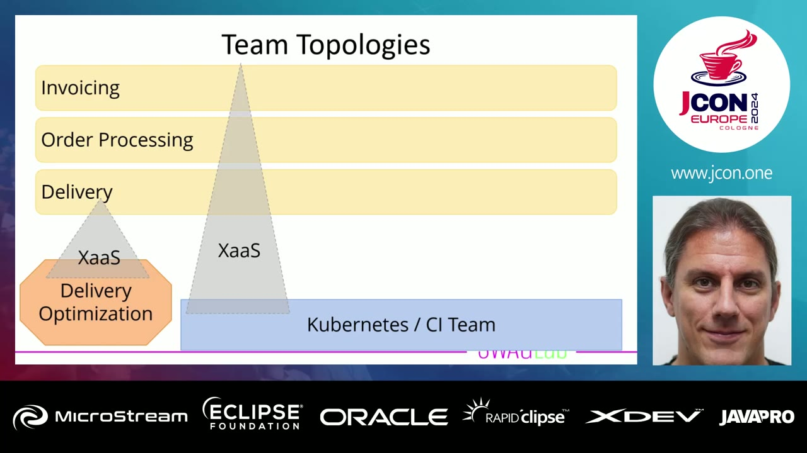
Frame 24 (29:00) — Full picture. Two X-as-a-Service cones connect a Platform team (Kubernetes / CI) and the Complicated-Subsystem team to the stream-aligned teams above them.
1. Stream-aligned team
Aligned to a single valuable flow of work — a product, user journey, or business capability. Owns it end-to-end (build, deploy, run). "You built it, you run it." In Eberhard's example: invoicing, order processing, delivery. The default team type; ~80% of engineering capacity in a healthy org.
2. Platform team
Provides an internal product that accelerates stream-aligned teams by removing non-differentiating complexity. Treated as a product with internal customers. Measured by developer experience / NPS. Eberhard's example: Kubernetes + CI/CD. Eberhard: "there is no need to actually talk to these people — instead they provide an API."
3. Enabling team
Specialists who help stream-aligned teams overcome obstacles and grow their own capabilities. Rotates in for a defined period, then moves on. Coaches, doesn't build for them. Eberhard's example: an architecture team that joins a stream-aligned team "for a short period of time to work on a very specific topic."
4. Complicated-Subsystem team
Owns a subsystem that requires deep specialist knowledge — ML models, video codecs, payment-risk engines, scientific computing. Eberhard's example: Delivery Optimization — advanced algorithms, AI, "all that stuff." If you force a stream-aligned team to also do this, their cognitive load explodes.
The three interaction modes
Mode
What happens
When
Collaboration
Two teams work together closely for a defined period to discover something new (an API, a shared model).
Temporary — while building a new service, exploring a new domain. Should not become permanent.
X-as-a-Service
One team provides something (service, library) that another consumes with minimal interaction.
The default steady state. Platform teams expose services to stream-aligned teams.
Facilitating
One team helps and mentors another — coaching, not code ownership.
Enabling teams use this exclusively. Removing obstacles, not doing the work.
The "magnets" caveat — Eberhard's most important point about org design
"If you draw an org chart, things won't be different just because you draw the org chart. You somehow have to work on the organization and actually make people collaborate. These are magnets."
— Eberhard Wolff, 00:30:10
What this means in practice:
Don't rename teams and call it done. Moving labels around on Visio does nothing. The team has to actually own the stream end-to-end.
Work on informal structures too. TT acknowledges that the real organization lives in Slack channels and DMs, not the formal chart.
Not every team needs direct business impact. Enabling teams exist to lower other teams' cognitive load. They are valuable because they don't ship customer features directly.
"1 domain = 1 team" is impossible. Teams are split by fracture planes (regulatory compliance, change cadence, geography, risk profile, technology) — not only by domain.
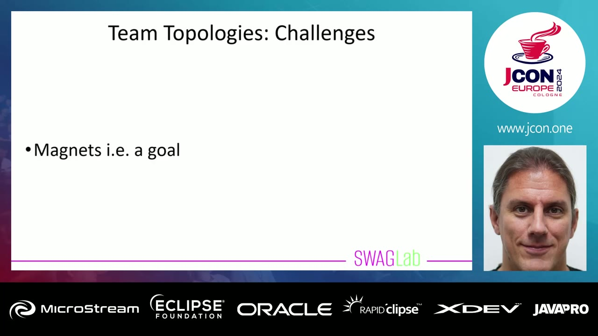
Frame 25 (30:00) — "Magnets i.e. a goal." Eberhard's one-word warning. The pattern is a target, not a command.
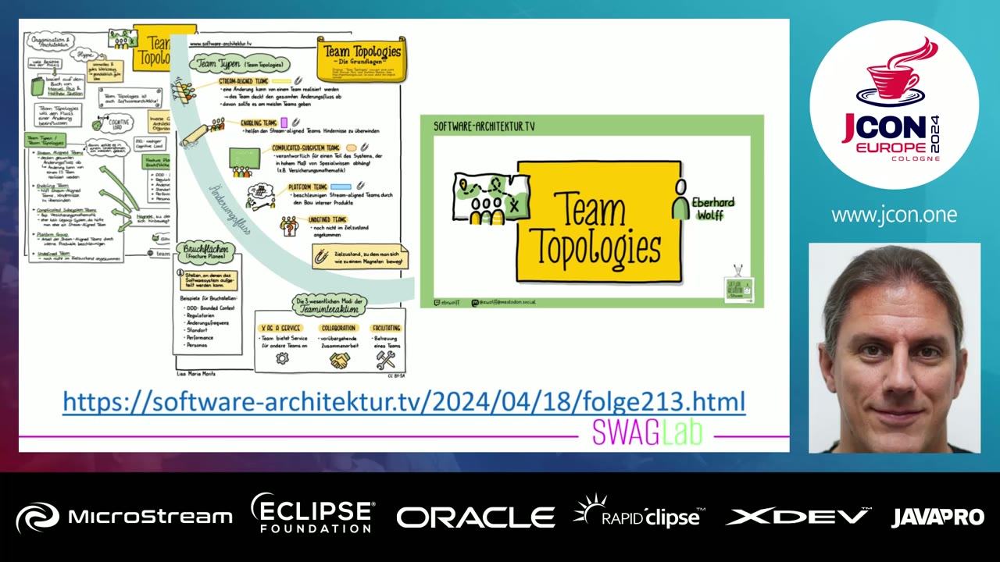
Frame 26 (32:00) — Resources. Sketchnotes on the four team types and three interaction modes, plus Eberhard's German-language video at software-architektur.tv. English material at teamtopologies.com.
Enrichment — cognitive load (the "why" behind Team Topologies)
Skelton & Pais name team cognitive load as a first-class design constraint — "the mental effort required for being able to safely make a change in a software system." Three flavors:
Intrinsic cognitive load — inherent complexity of the domain. Reduce by splitting the system.
Extraneous cognitive load — accidental complexity from tooling, infrastructure, dependencies on other teams. Reduce with platforms, enabling teams, clean APIs.
Germane cognitive load — the productive effort of building the business. You want more of this, less of the other two.
Enrichment — Team Topologies vs. Evans' Strategic Design
The tactical patterns form a hierarchy: Services use Aggregates; Aggregates contain Entities + Value Objects + emit Domain Events; Repositories load whole Aggregates; Factories build complex ones.
The rule is unidirectional: lower layers don't know about higher ones.
Eberhard applies this to the Delivery context: Parcel (entity), Address (value object), Delivery (aggregate), ScheduleDelivery (service).
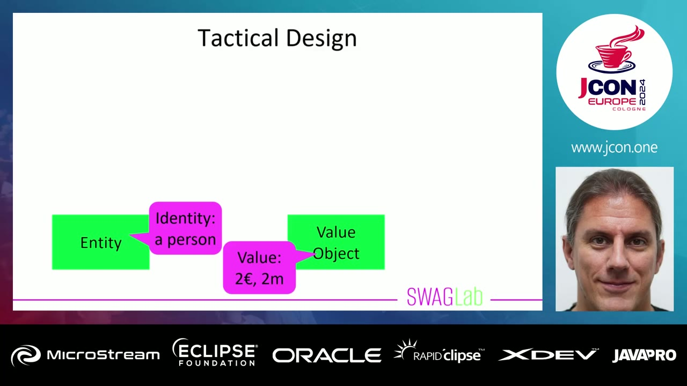
Frame 28 (35:30) — Entity vs. Value Object. Identity (a person is still me even if my name, address, birthday match someone else) vs. value (2 € is 2 € regardless of which bill).
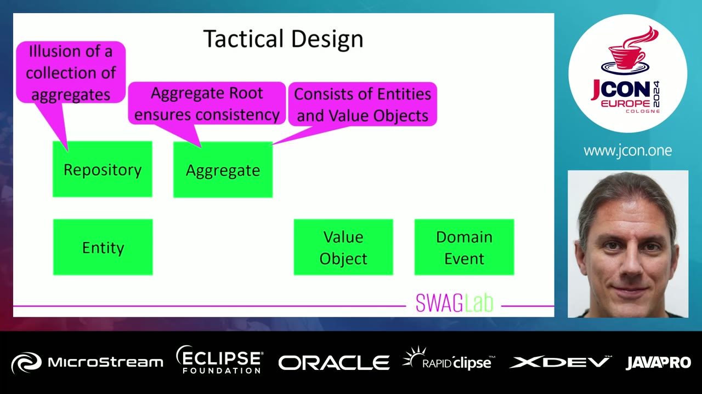
Frame 29 (36:30) — The full hierarchy in one diagram. Repository + Aggregate upper row; Entity + Value Object + Domain Event lower row.
The hierarchy — Eberhard's mental model
"Services should probably use Aggregates, Aggregate should use entities and value objects, but not the other way around." The arrows point down: Services use Aggregates, Aggregates contain Entities + Value Objects.
Pattern
One-line definition
Entity
Defined by a thread of identity that survives state changes. Order, Customer, Parcel.
Value Object
Immutable, no identity; equality by attributes. Money, Address, Email.
Domain Event
Past-tense fact emitted by an aggregate after a state change. OrderPlaced, ParcelLeftWarehouse.
Aggregate
Cluster of entities + VOs treated as one consistency boundary, accessed only through one root entity.
Repository
Collection-like abstraction for loading and saving whole aggregates. One repo per aggregate root.
Factory
Encapsulates non-trivial construction so invariants are valid the moment the object exists.
Domain Service
Stateless operation whose verb in the Ubiquitous Language naturally spans more than one aggregate.
Eberhard's Delivery example
Parcel is an entity — "something I can identify."
Address is a value object.
Together they form the Deliveryaggregate.
A factory creates the complex aggregate.
A repository handles "all the different deliveries that there ever were."
Customer is also an aggregate (in this context — the customer who receives the parcel).
ScheduleDelivery is a service because it spans both aggregates — "this logic cannot be part of either aggregate."
A domain event fires: "a delivery has been scheduled".
"Service is a stateless object that contains the logic that doesn't fit in entities or aggregates — for example, something like a delivery process, which probably deals with customers and a delivery and products."
— Eberhard Wolff, 00:37:07
Enrichment — Vernon's four rules of thumb for aggregates
Model true invariants in consistency boundaries. The aggregate is the atomic consistency unit.
Design small aggregates. Root + only what must be consistent with it.
Reference other aggregates by identity.Order holds CustomerId, not Customer.
Use eventual consistency outside the boundary. Publish a domain event; react asynchronously.
Code sketch — what an aggregate looks like in Java
Eberhard's talk doesn't show actual code, but this is what the patterns produce in idiomatic Java. Read it as illustration, not a copy-paste target.
// --- Aggregate root: Order ---public classOrderimplementsAggregateRoot<Order, OrderId> {
private finalOrderId id;
private finalCustomerId customer; // ID, NOT CustomerprivateOrderStatus status;
private finalList<OrderLine> lines = newArrayList<>();
public voidaddLine(ProductId pid, int qty, Money price) {
require(qty > 0);
lines.add(newOrderLine(pid, qty, price));
registerEvent(newOrderLineAdded(id, pid, qty)); // domain event
}
public voidplace() {
require(!lines.isEmpty());
status = OrderStatus.PLACED;
registerEvent(newOrderPlaced(id, customer, total()));
}
}
// --- Value objects ---public recordMoney(BigDecimal amount, Currency currency) { /* immutable */ }
public recordOrderId(UUID id) implementsIdentifier {}
public recordCustomerId(UUID id) implementsIdentifier {}
// --- Repository: ONE per aggregate root ---public interfaceOrdersextendsRepository<Order, OrderId> {
Optional<Order> findById(OrderId id);
void save(Order order);
}
// --- Domain service: spans >1 aggregate ---public classTransferMoney {
public voidtransfer(AccountId from, AccountId to, Money amount) {
// load both, apply rules on each, persist; emits Withdrawn/Deposited events
}
}
Heuristic tests for aggregate boundaries
Can you delete the aggregate in one transaction? If no, you probably mixed lifecycles.
Are all cross-aggregate associations *Id fields? If you see an object reference to another aggregate root, the boundary is wrong.
Does one user request modify exactly one aggregate? If you need two, ask "is this one user's job?" — if not, switch to eventual consistency.
Anti-patterns — tactical patterns gone wrong
Anemic Domain Model — entities are bags of getters/setters, all rules live in services. Martin Fowler: "the fundamental horror of object-oriented programming." Fix: move behavior onto the entity, keep setters private, expose domain verbs (order.place()).
God Aggregate — one cluster that owns everything "for convenience." Destroys performance and concurrency because unrelated use cases compete for the same locks.
Wrong aggregate boundary — splitting two objects that share a true invariant into separate aggregates forces multi-aggregate transactions; lumping unrelated lifecycles into one causes the God Aggregate.
Domain events used as integration events — pushing OrderPlaced onto Kafka verbatim. Translate at the publication boundary into a versioned integration event.
"EVE-ARF-S" — pattern order
Entity · Value Object · Event (the leaf types) → Aggregate (wraps them) → Repository (loads/saves aggregate) → Factory (builds complex ones) → Service (spans multiple aggregates).
Eberhard's most counter-intuitive advice: DDD's tactical patterns are not always the right choice.
For simpler systems, Fowler's Transaction Script or Table Module can be correct.
Heuristic: ask the domain expert why first. "Just display this data" → Transaction Script. "We need to figure out whether we can deliver based on customer status, address, history" → Domain Model.
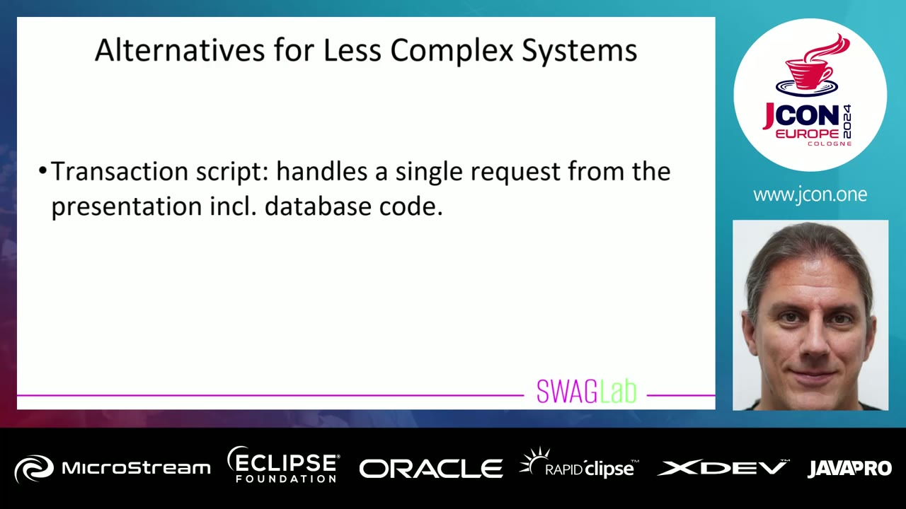
Frame 30 (38:30) — First alternative. "Transaction script: handles a single request from the presentation incl. database code."
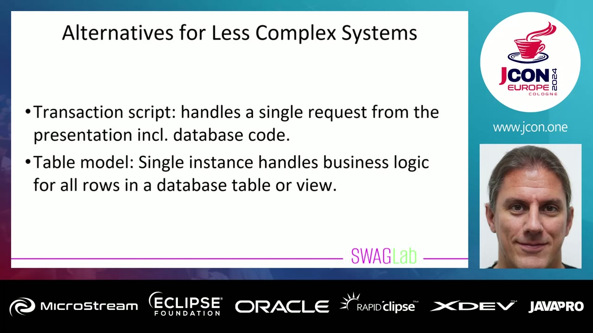
Frame 31 (39:30) — Second alternative. "Table model: Single instance handles business logic for all rows in a database table or view."
The example Eberhard uses
"I want to see this information about the customer." Most engineers jump to: build a Customer aggregate, add a getter, render it. But:
"Okay, why?" "Because I want to figure out whether I can deliver to him — depending on the address, depending on whatever his status is, whether he's a person we want to deliver stuff to."
That second answer is business logic. It changes the question from "display this data" to "decide based on rules." That second question is what tactical DDD exists for. The first is not.
The decision heuristic
"If you have very simple logic — if you just want to copy data from A to B, if you just want to add something to a database — maybe [Transaction Script] is what you want to do."
— Eberhard Wolff, 00:38:51
Fowler's own rule (PofEAA, Chapter 9):
It all comes down to the complexity of the behavior in your system. If you have complicated and ever-changing business rules involving validation, calculations, and derivations, chances are you'll want an object model to handle them. On the other hand, if you have simple not-null checks and a couple of sums to calculate, a Transaction Script is a better bet.
Enrichment — the three domain-logic patterns (Fowler, PofEAA Ch. 9)
Pattern
Style
Best for
Watch out for
Transaction Script
Procedural — one script handles one request from presentation to database
Simple CRUD, low logic, "not-null checks and a couple of sums"
Logic duplication across scripts as rules multiply; turns into spaghetti past the cutover
Table Module
One class per database table; a single instance handles all rows
DataSet/DataTable-driven apps, reports that mirror the schema
Locks the object model to the table structure; fights you when the domain shape diverges from the schema
Domain Model
Rich interconnected objects that carry both behavior and data
Complex, ever-changing business rules with validation, calculations, derivations
High upfront cost; overkill when there is little behavior; needs a team trained to think in objects
Junior-friendly analogy — three restaurants
Transaction Script = a food truck with one handwritten menu and one employee shouting orders at the cook. Fine when the menu has five items. Table Module = a chain restaurant where every dish is just a row in a Dishes spreadsheet; the kitchen reads the spreadsheet and follows the same procedure per row. Efficient when menu = table. Domain Model = a real restaurant with a chef who knows that "vegan changes dessert, removes butter, swaps the garnish." That knowledge lives in the kitchen, not in a single procedure.
Long-lived software (10+ years) — refactoring cost out of a tangled Transaction Script dwarfs upfront modeling cost.
Multiple teams / contexts touching the same rules — Bounded Contexts + Aggregates prevent the "two teams using the same word" failure mode.
Compliance / regulatory complexity — when an auditor needs to see the rule in one place, not scattered across 200 transaction scripts.
High cost of a bug — finance, healthcare, logistics: behavior must be executable specification, not buried in SQL.
Anti-patterns — choosing wrong
Choosing Domain Model because it "sounds advanced." Ceremony without complexity is just slower delivery.
Choosing Transaction Script because "we don't have time to model." The opposite is often true: skipping the model borrows time now but charges compound interest later.
Anemic Domain Model — objects that are just data bags, with all behavior in services. Worst of both worlds.
Premature Event Sourcing / CQRS. Eberhard explicitly questions why you'd reach for these when a single bounded context with a plain state store would do.
"ASK before you MODEL"
Before reaching for tactical DDD, ASK the domain expert why:
"Just display this data" → Transaction Script.
"Same procedure per row" → Table Module.
"Decide based on rules that change" → Domain Model.
Modern equivalents to know
Active Record (Rails, Laravel, Django ORM) — Fowler's "simple Domain Model": one object per row, object carries CRUD behavior.
Event Sourcing — store events, derive state. Use when audit, temporal queries, or integration with other contexts dominate.
CQRS — separate command and query models. Use when read and write shapes diverge sharply.
Eberhard argues for plain POJOs at the domain layer — no JPA, no Spring, no Serializable leaking in.
jMolecules (Oliver Drotbohm) expresses DDD roles as architectural stereotypes (@Entity, @ValueObject, @AggregateRoot) and a ByteBuddy plugin projects them to JPA / Spring / Jackson at compile time.
Architecture-management tools (Structure 101, ArchUnit, jQAssistant) reveal dependency violations — to facilitate communication, not to police.
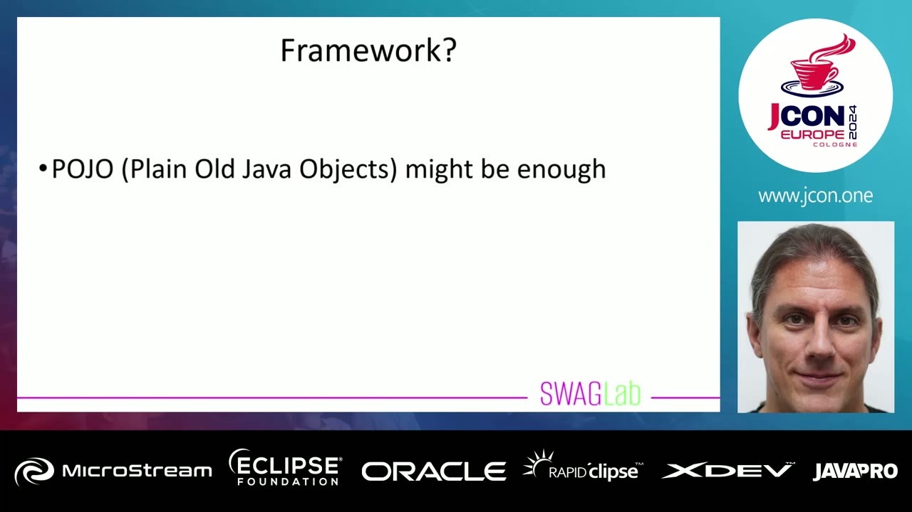
Frame 32 (42:00) — "Framework?" Eberhard's rhetorical question. The answer is: maybe not. Plain POJOs may be enough.
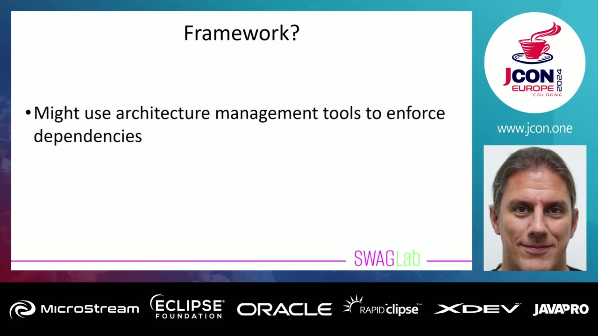
Frame 33 (43:30) — The tool category. "Might use architecture management tools to enforce dependencies."
POJOs — the foundation
Eberhard (echoing Oliver Drotbohm): a "POJO" in JPA is a lie. To make Hibernate happy you end up with @Entity on the class, @Id on the identifier, public/protected default constructors on objects that shouldn't have one, Serializable on identifiers, @OneToMany relationships that bake aggregate boundaries into the persistence schema, and identifier types that leak into the API.
Over time, persistence concerns leak into the domain. What was a database id ends up displayed in the UI and used in URLs.
jMolecules — DDD roles as first-class types
jMolecules lets you write plain classes annotated with architectural stereotypes:
importorg.jmolecules.ddd.annotation.*;
// POJO domain. No @Entity from JPA. No @Service from Spring.@Entity// ← jMolecules stereotypepublic classBankAccount {
@Identityprivate finalIBAN iban; // value object identifierprivateMoney balance;
public voidwithdraw(Money amount) {
if (balance.amount().compareTo(amount.amount()) < 0)
throw newInsufficientFundsException(iban);
this.balance = balance.subtract(amount);
}
}
@ValueObjectpublic recordIBAN(String value) { /* ... */ }
@ValueObjectpublic recordMoney(BigDecimal amount, Currency currency) { /* ... */ }
When JPA / Spring / Jackson is on the classpath, the jMolecules ByteBuddy plugin synthesises all the technology annotations and boilerplate at compile time. The BankAccount.java file still contains zero framework imports. Your domain stays portable across JPA, MongoDB, JDBC, and Jackson.
Eberhard is emphatic: "I shouldn't say enforce. It's about taking a look at the code, making sure it conforms to the architecture, and if it doesn't, either someone didn't understand the architecture — which should lead to some kind of communication — or there's a problem with the architecture — which should also lead to some kind of communication."
The job of an architecture-management tool is not to fail PRs. It's to:
Reveal — surface the dependency graph so a team can see where it stands.
Facilitate communication — violations are prompts for a discussion about understanding ("didn't know that boundary existed") or design ("we have a reason, the rule is wrong here").
Only then enforce — once the team has internalized the rule and violations are rare exceptions, put it in the build to catch the genuine mistake. CI-as-gate is the end state, not the starting point.
Scans artifacts into a graph; official jMolecules plugin generates PlantUML of DDD building blocks.
NDepend
CQLinq (LINQ over code) + dependency matrix
.NET ecosystem; 200+ default rules.
Degraph
Scala/Java DSL + GraphML export
JVM dependency slices; used by JUnit 5 to keep package cycles out.
Spring Modulith
Spring-native module model
Verifies module boundaries; ships a jMolecules integration.
// Example ArchUnit rule with jMolecules — fail the build if any aggregate references another by object@ArchTeststatic finalArchRule aggregates_should_only_reference_other_aggregates_by_id =
JMoleculesDddRules.aggregatesShouldNotReferToOtherAggregatesByDirectObjectReference();
// And a layer rule — domain must not depend on JPA@ArchTeststatic finalArchRule domain_should_not_depend_on_jpa =
noClasses().that().resideInAPackage("..domain..")
.should().dependOnClassesThat().resideInAPackage("..jakarta.persistence..");
Anti-patterns — code-level DDD gone wrong
The "framework-infested domain" — Order annotated with @Entity @Table @DynamicUpdate, public no-arg ctor, Serializable id, JPA callbacks for domain events. Fix: move JPA annotations to the adapter layer (ByteBuddy via jMolecules, or an explicit mapping pattern).
"Entity suffix" everywhere — OrderEntity, CustomerEntity, MoneyVO. The role is in the annotation, not the name.
Architecture-by-convention-only — "We agreed in a meeting that domain must not depend on infrastructure." Three months later, someone imports EntityManager from a service.
Treating the architecture tool as "the architecture police." Building rules that auto-fail PRs creates an adversarial relationship.
"R-E-E" — Eberhard's three-stage rule
Reveal the graph → Engage in conversation about violations → Enforce only after the rule is internalized.
The order matters. Skipping R and going straight to E produces a CI gate that nobody understands and everyone routes around.
Eberhard recaps the 8 techniques he walked through — "like the big brush", from Event Storming at the top to architecture-management tools at the bottom.
Strategic Design is on the slide but he recommends Team Topologies instead.
Slides + sample chapters of his books are free via email (Lambda-backed microservice). Email is logged for 14 days and used only for sending.
Frame 35 (46:00) — Closing slide. Slides + sample chapters via email. Powered by an Amazon Lambda microservice — a small piece of meta-self-demonstration. Email logged for 14 days, used only for sending.
The techniques, in Eberhard's order
Big-Picture Event Storming — the whole story.
Core Domain — where to focus.
(Skipped: Strategic Design — he prefers Team Topologies instead.)
Bounded Contexts — the architectural unit.
Inside one Bounded Context: Technical Design (the tactical building blocks).
Alternatives for less complex systems — Transaction Script and Table Module, when DDD is overkill.
POJOs in code — keep the domain free of JPA leakage.
Eberhard's strongest point is not any single technique. It's that the talk is a sample menu, not a recipe. He explicitly says the order is convenient for teaching, not for shipping. In your project:
Pick the technique that solves the problem in front of you.
Skip the ones that don't apply.
Re-run any step whenever new information makes it stale.
Iterate between abstract and concrete as you learn more.
"Software development is a learning process. You will never get it right the first time, so you need to iterate and iterate and iterate."
— Eberhard Wolff, 00:02:04
Resources Eberhard mentions in the talk
Slides + sample chapters of his books — send an email to jcon2024@ewolff.com. The system is a small microservice on Amazon Lambda. Email addresses are logged for 14 days and used only to send the slides.
software-architektur.tv — his German-language architecture stream (the "folge213" episode on Team Topologies was mentioned in Frame 26).
If you only read one more thing after this page
Read Vaughn Vernon's Implementing Domain-Driven Design. It's the single most actionable book on DDD — shorter than Evans, more concrete than Fowler, and organized around the same tactical vocabulary Eberhard uses. Start with Chapter 2 (Domains, Subdomains, and Bounded Contexts) and Chapter 10 (Aggregates).
The Eberhard Wolff mnemonic for the whole talk
I-C-I — Iterate · Contexts over categories · Invest in the core.
Iterate: never treat DDD as phases.
Contexts over categories: a Bounded Context is a linguistic boundary, not a file folder.
Invest in the core: senior engineers on the Core Domain, juniors on Generic, library for everything else.
Thanks for reading. Now go apply one technique this week — and iterate.
GGlossary — every term, one paragraph each
Skim this section before reading the chapters, or come back to it as a reference when a term is unfamiliar. Concepts are roughly ordered from the most foundational (Domain, Subdomain) to the most tactical (Aggregate, Repository).
Aggregate
A cluster of domain objects (entities + value objects) treated as one consistency boundary, accessed only through a single root entity. Vaughn Vernon: "Aggregate is synonymous with transactional consistency boundary."
Anti-Corruption Layer (ACL)
A translation layer in your Bounded Context that converts an upstream model's terms into your own, protecting your Ubiquitous Language from leaking external jargon.
Bounded Context
An explicit boundary inside which one domain model and one Ubiquitous Language are internally consistent. Introduced by Eric Evans in 2003.
Chaotic Exploration
The first phase of Big-Picture Event Storming. Everyone silently writes past-tense domain events on orange stickies and sticks them anywhere on the wall. Silence is mandatory.
Cognitive Load
(Team Topologies) "The mental effort required for being able to safely make a change in a software system." Three flavors: intrinsic, extraneous, germane. Skelton & Pais's central concept.
Complicated-Subsystem Team
A Team Topologies team that owns a subsystem requiring deep specialist knowledge — ML models, video codecs, payment-risk engines — so stream-aligned teams don't drown in it.
Context Map
A documented map of how Bounded Contexts interact: their boundaries, integration patterns (Shared Kernel, Customer/Supplier, ACL, OHS, …), and translation points.
Core Domain
The part of the system whose removal would invalidate the business. Source of competitive advantage; gets the best engineers. You cannot identify it without domain experts.
CQRS
Command-Query Responsibility Segregation. Separate command (write) and query (read) models. Useful when read and write shapes diverge sharply (statistics, search, dashboards).
Domain
The sphere of knowledge, influence, or activity that the software is being built for. Problem space (vs. Bounded Context, which is the solution space).
Domain Event
A past-tense fact emitted by an aggregate after a state change — OrderPlaced, MoneyWithdrawn, ParcelLeftWarehouse. Internal to one Bounded Context; should not be confused with integration events.
Domain Model
(Fowler, PofEAA) An object model where the domain objects carry both behavior and data, not just data. The basis of tactical DDD.
Domain Service
A stateless operation whose verb in the Ubiquitous Language naturally spans more than one aggregate. Lives above aggregates; never reaches inside one.
Enabling Team
A Team Topologies team of specialists who help stream-aligned teams overcome specific obstacles and grow their own capabilities. Rotates in, coaches, moves on.
Entity
An object defined by a thread of identity that survives state changes — Order, Customer, Parcel. Two entities with identical attributes are still different.
Event Sourcing
Persist events instead of state; derive current state by replaying them. Useful when audit, temporal queries, or event-driven integration dominate.
Event Storming
A collaborative workshop technique invented by Alberto Brandolini in 2013. A cross-functional group maps a business domain as a timeline of past-tense events on a paper roll, using colored sticky notes.
Factory
Encapsulates non-trivial construction of an aggregate so invariants are valid the moment the object exists. Keeps complex creation out of constructors and the client code.
Fracture Plane
(Team Topologies) A reason teams should be separate — domain boundary, regulatory boundary, geography, change cadence, technology, risk profile.
Generic Subdomain
Functionality solved identically in most companies (auth, email, PDF generation). Buy it, use a library, hand it to juniors.
jMolecules
A library (by Oliver Drotbohm) that lets you write plain classes annotated with DDD architectural stereotypes (@Entity, @ValueObject, @AggregateRoot); a ByteBuddy plugin projects them to JPA / Spring / Jackson at compile time.
Pivotal Event
(Event Storming) An event after which "the world is different" — a true phase transition. Eberhard's examples: Order accepted (cart → order, edit → cancel-only), Parcel left warehouse (warehouse can no longer recall it).
Platform Team
(Team Topologies) Provides an internal product (the "thinnest viable platform") that accelerates stream-aligned teams. Example: a Kubernetes + CI/CD team exposing self-service pipelines.
POJO
Plain Old Java Object. A class with no framework dependencies — no JPA, no Spring, no annotations forcing behaviour. The term is from Martin Fowler.
Repository
Collection-like abstraction for loading and saving whole aggregates. One repository per aggregate root, returning fully-loaded aggregate instances.
Stream-aligned Team
(Team Topologies) The default team type. Aligned to a single, valuable flow of work; owns it end-to-end (build, deploy, run). "You built it, you run it."
Strategic Design
Evans' organizational DDD practice: align software model with the business by finding Bounded Contexts and teams to own them. Eberhard prefers Team Topologies instead.
Subdomain
A partition of the business domain — Core, Supporting, or Generic. Problem space. A subdomain can span multiple Bounded Contexts.
Supporting Subdomain
Necessary for the Core Domain to function, but not differentiating. Often business-specific enough that no off-the-shelf product exists. Custom-built but with a smaller team.
Swim Lane
(Event Storming) A horizontal slice of the event wall marking a parallel sequence of activities. Eberhard's e-commerce example: Invoicing and Delivery run in parallel after an order is accepted.
Table Module
(Fowler, PofEAA) One class per database table; a single instance handles all rows. Locks the object model to the table structure.
Team Topologies
A team-organization pattern language by Matthew Skelton & Manuel Pais (book 2019, 2nd ed. 2025). Four team types + three interaction modes + cognitive load as a first-class design constraint.
Transaction Script
(Fowler, PofEAA) One script per use case; procedural from presentation to database. Right for simple CRUD; turns into spaghetti as rules multiply.
Ubiquitous Language
A vocabulary shared by code, database, software engineers, and domain experts — used everywhere inside one Bounded Context. Introduced by Eric Evans in 2003.
Value Object
An immutable object with no identity; equality is by attributes. Examples: Money, Address, Email, IBAN. Two € is two € regardless of which bill.
X-as-a-Service (XaaS)
(Team Topologies) An interaction mode where one team provides a service or platform that another consumes with minimal interaction. The default steady-state between Platform teams and Stream-aligned teams.
★Cheat sheet — one page, printed, ready
Print this page (Ctrl/Cmd+P) and pin it above your monitor. Each card is a decision rule you'll reach for in design discussions.
Identify the Core
Apply the replacement test: if a competitor replaced this with a SaaS overnight, would you lose customers? Yes → Core. No but specific to you → Supporting. No, anyone could replace it → Generic. Ask domain experts. "I don't know" is fine.
Find BC boundaries
From the Event Storming wall: areas between swim lanes and pivotal events are candidates. Not all pivotal events split BCs. Two valid "customers" that mean different things = BC boundary.
Pivotal event check
Is the world genuinely different afterwards? (Cart → Order. Edit → Cancel-only. "Cannot recall the parcel.") If yes → pivotal. If only "we have new info" → not pivotal.
Pick a tactical pattern
ASK the domain expert why. "Just display" → Transaction Script. "Same procedure per row" → Table Module. "Decide based on changing rules" → Domain Model.
Aggregate boundary test
Can you delete the aggregate in one transaction? Are all cross-aggregate references *Id fields? Does one user request modify exactly one aggregate? If "no" to any, the boundary is wrong.
Keep the domain clean
No @Entity from JPA. No Serializable on identifiers. No public no-arg ctors. Use jMolecules stereotypes and let ByteBuddy project to the framework at compile time.
Use arch tools in 3 stages
Reveal the dependency graph → Engage in conversation about violations → Enforce only after the team has internalized the rule. Don't skip straight to CI-as-gate.
Team Topologies default
Default team type: Stream-aligned. Target ratio: ~80% stream-aligned. The rest are Platform, Enabling, Complicated-Subsystem. Three interaction modes: Collaboration, X-as-a-Service, Facilitating.
Org design caveat
Team Topologies defines magnets, not mandates. Renaming teams on paper changes nothing. Work on actual collaboration, not the org chart.
Event Storming silent phase
Phase 2 (Chaotic Exploration) must be silent. Discussion comes later. Sticky colors: Orange = event, Pink = hotspot, Yellow = actor, Blue = external system, Lilac = software, Green = opportunity.
The waterfall disclaimer
Eberhard's W-I-C-C: Work in Iterations, Change level of abstraction, repeat any Concrete step. Iterate any phase whenever you need to. The order is for teaching, not for shipping.
The hierarchy (tactical)
EVE-ARF-S: Entity · Value Object · Event (leaves) → Aggregate (wraps them) → Repository (loads/saves) → Factory (builds) → Service (spans multiple). Lower levels don't know about higher ones.